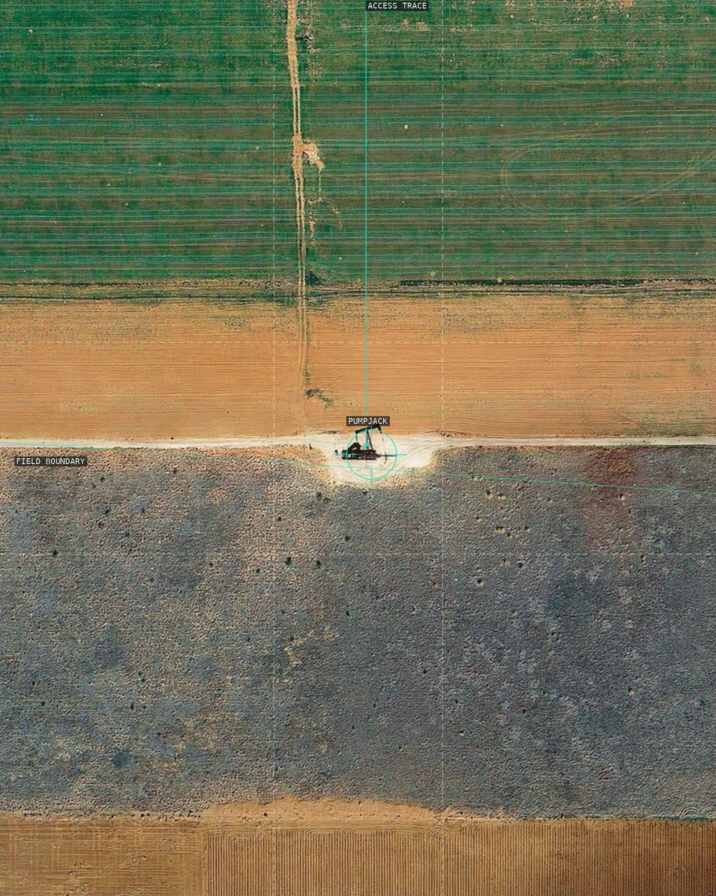
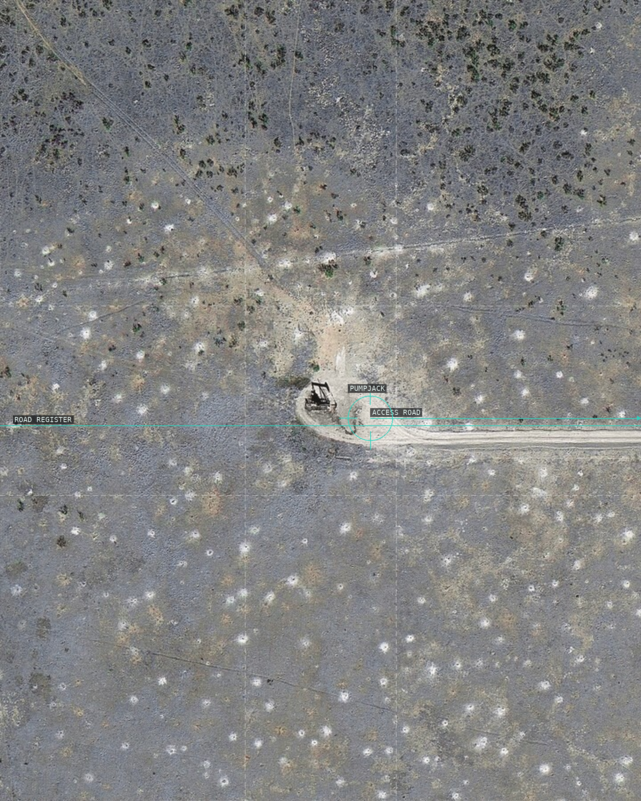
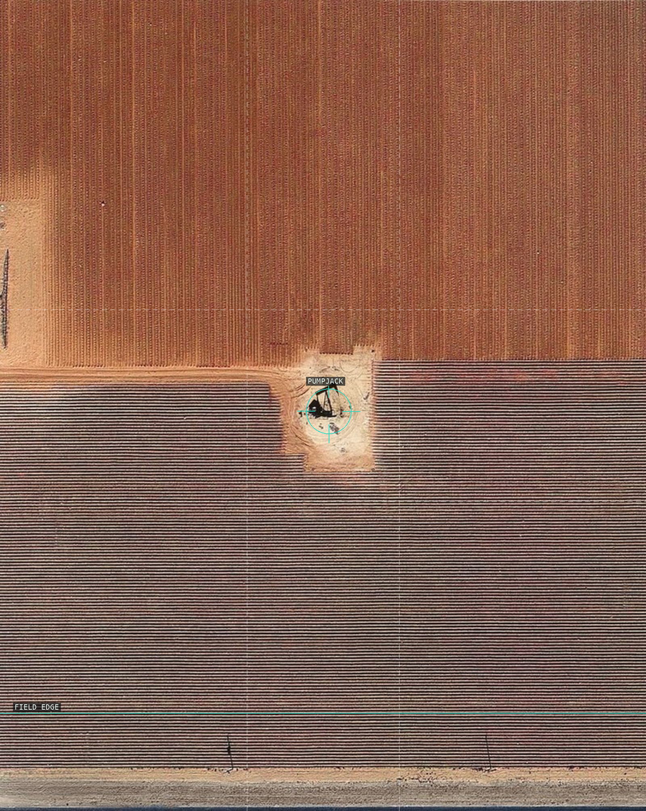
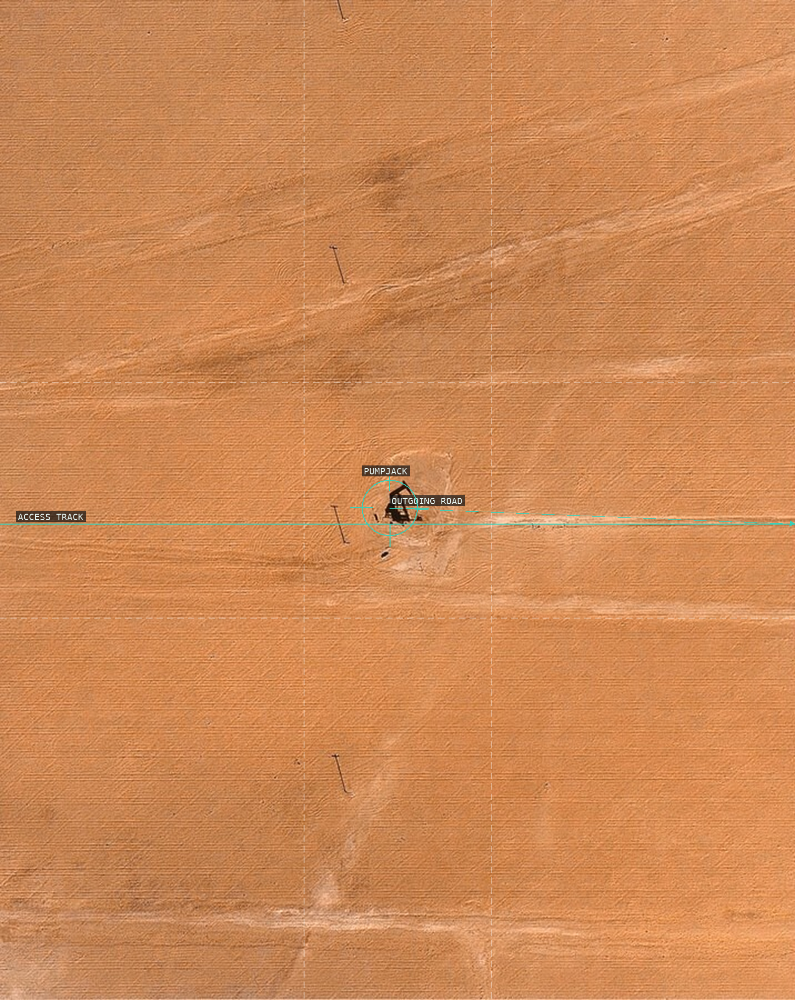
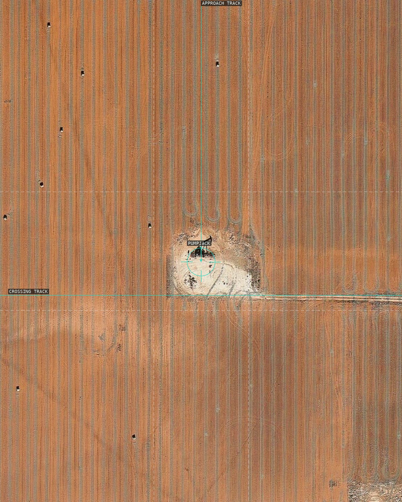
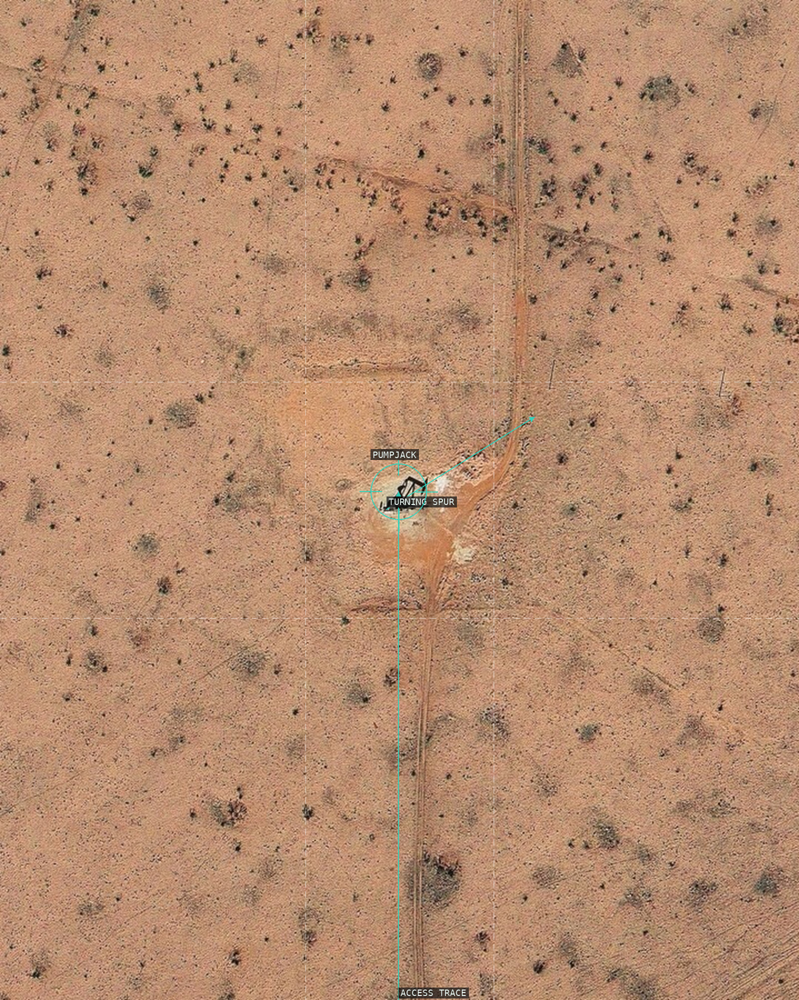
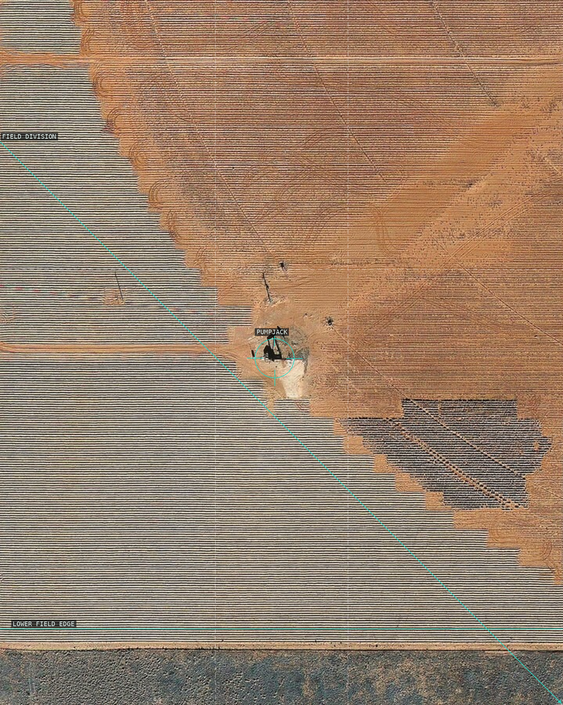
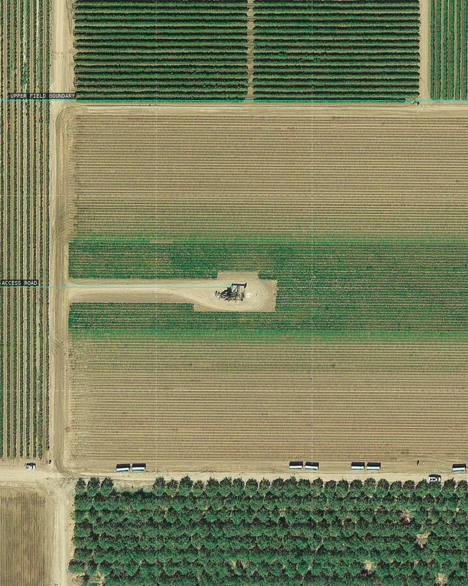
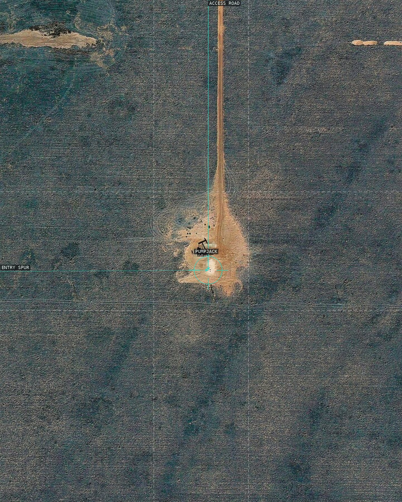
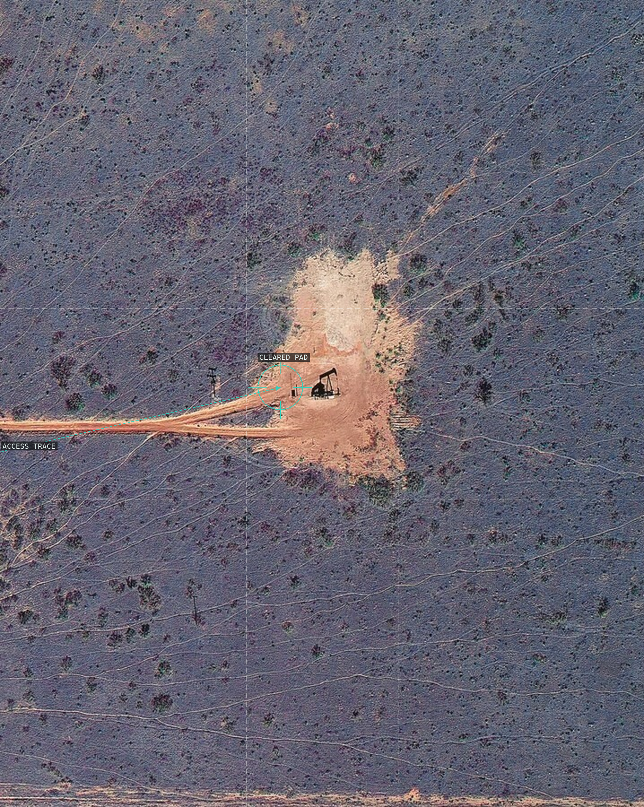

/* mishka-henner - proofs */
10 plates. Deterministic overlays rendered by the composition-analysis skill.

01-api-21930378-slaughter-tx
A straight access trace pins the small pumpjack to a stack of cultivated fields.

02-api-21931252-san-andres-tx
A small machine interrupts a dense field of circular vegetation marks.

03-api-21902614-levelland-tx
The centered pumpjack breaks two tightly ruled agricultural surfaces.

04-api-21902673-levelland-tx
A tiny extraction site concentrates the otherwise near-monochrome field.

05-api-50133229-clear-fork-tx
A central pumpjack is held by a thin vertical route through scrub.

06-api-07932684-levelland-tx
The road's slight turn makes the small extraction point a junction in open scrub.

07-api-21901820-slaughter-tx
A jagged boundary turns several crop blocks into a shallow geometric map.

08-api-02914653-mountain-view-ca
Orthogonal crop rows make a localized pumpjack read as a system node.

09-api-21931656-levelland-tx
A narrow vertical road makes the pumpjack a solitary interruption in dark vegetation.

10-api-21932470-slaughter-tx
Tracks converge on a bright cleared pad, revealing industrial order inside scrub.